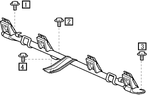
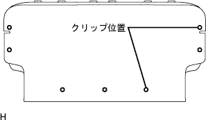

Rena seat ASSY (integrated) assembly |
| 1. Childrest Rested Seat Anka Bracket RH installation |
Temporarily tighten the bolts in Fig. 4.
|  |
Tighten the four bolts in the order of 1 → 2 → 3 → 4.
Attach the floor carpet.
| 2. List of back hinge SUB-ASSY RH installation |
 |
With a bolt, tighten the rear seat Batsuku hinge RH.
| 3. List of back hinge SUB-ASSY LH installation |
With a bolt, tighten the rear seat Batsuku hinge LH.
| 4. List of rear seat back lock Assy RH installation |
 |
With two bolts, tighten the rear seat cross clock ASSY RH.
| 5. List of back lock Assy LH installation |
With two bolts, tighten the rear seat cross clock ASSY LH.
| 6. List seat Batsuku Andchlow installed |
Attach the rear seat Batsuku -a -clos.
| 7. List of backpad SUB-ASSY (cover Tsuki) Installation |
 |
Use a hogling plier to attach a rear seat cross -cover and pad with a new hogling.
|  |
Attach a new clip to the rear seat cross cover.
| 8. List of back stop button glort installation |
Attach the grommet.
| 9. List of headrest support installation |
Attach six headrest support to the seatbatsuku ASSY.
| 10. Lear seat back stop release button installation |
Turn the release button by hand and attach the rear seat combat top release button.
| 11. List of headrest ASSY CTR installation |
Attach a rear seat headrest ASSY CTR to the rear seat Batsuku ASSY.
| 12. List of headrest assessed |
Attach 2 rear seat headrest ASSY to the rear seat Batsuku ASSY.
| 13. Lear seat cushion Ander cross installation |
Attach the rear seat cushion Anda cross to the rear seat cushion frame ASSY.
| 14. List of cushion cover & pad installation |
|
Use a hogling plier to attach a rear seat cushion cover and pad with a new hogling.